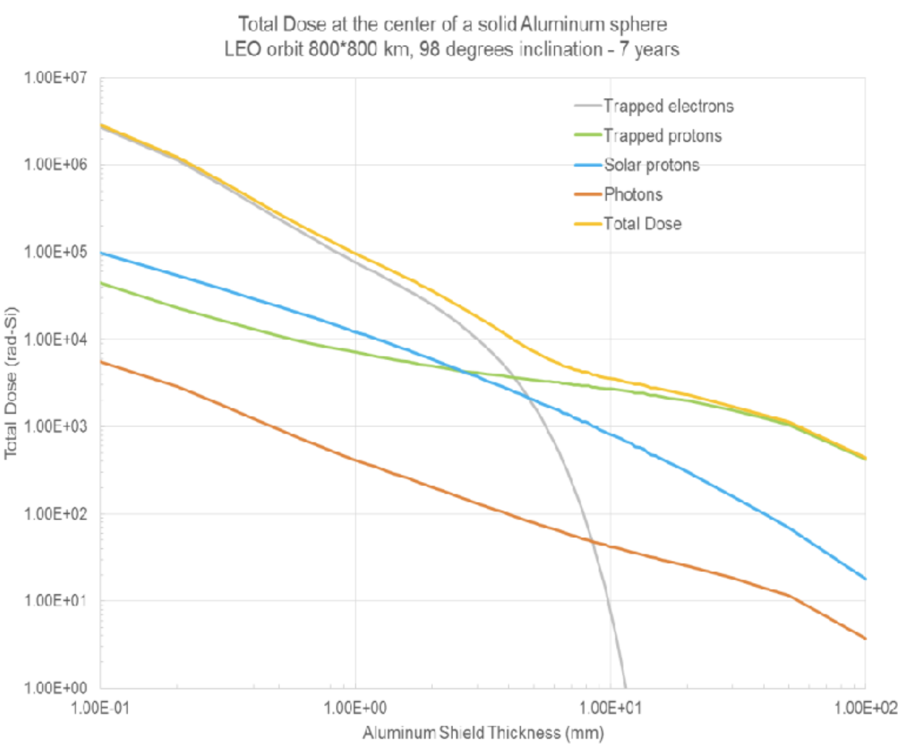
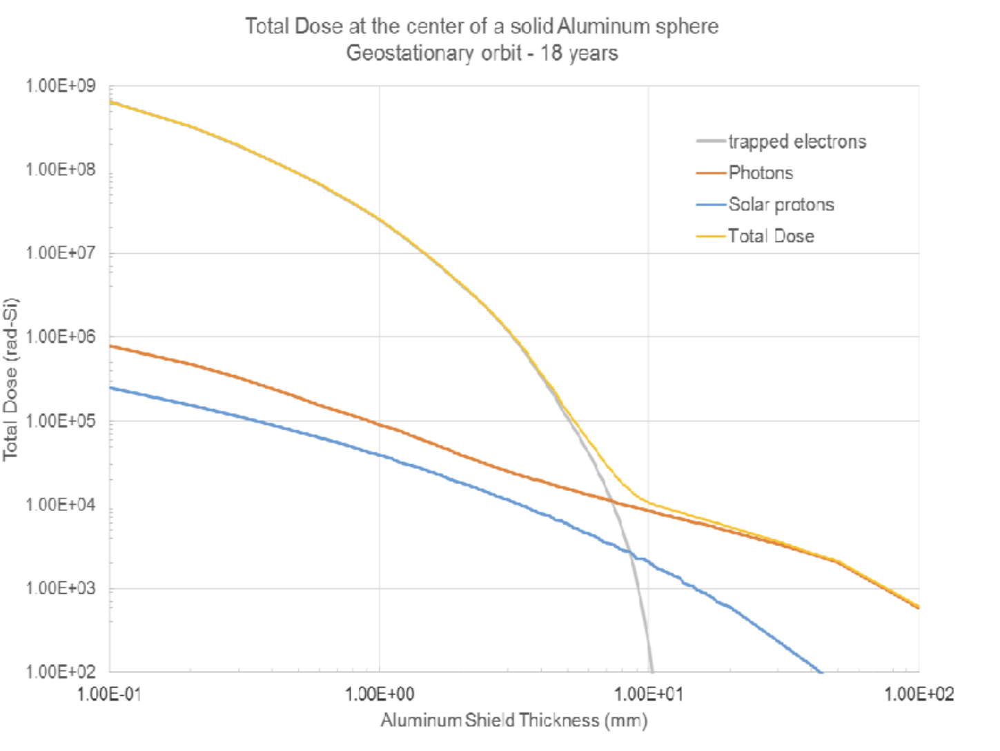

Module 14a
Estimating TID Effects
The calculation that turns a radiation environment into a threshold shift. A mission dose read from a dose–depth curve, or a particle fluence delivered by a beam, is carried through the energy deposited in one transistor's gate oxide, the electron–hole pairs that energy creates, the holes that survive recombination and are trapped, and the voltage those holes add to the threshold.
M14 followed ionizing radiation into the gate oxide of an MOS transistor: pairs created at 17 eV each, a fraction lost to initial recombination, the survivors drifting to the silicon interface, some of them trapped there, and the threshold shift that the trapped charge produces. It expressed each quantity per unit area of oxide. This module assembles those steps into one estimate for a specified device in a specified environment, the second half of the total-dose material in Decks 9 and 10, which the decks title Estimation of TID Effects. The input is either the dose a mission accumulates behind a stated shield, read from a dose–depth curve, or the fluence of particles a test beam delivers. The output is the threshold shift of one transistor, in volts.
Each step is a single multiplication or division, and each carries an assumption: that the dose is uniform through the oxide, that every electronvolt deposited goes into pair creation at the mean pair energy, that a stated fraction of the surviving holes is trapped, and that the trapped charge sits at the silicon interface. The arithmetic is simple; the assumptions decide how far the answer can be trusted, and each is stated where it enters. The units change along the way — dose in rad, energy in electronvolts, capacitance in farads — and each equation carries its conversion.
The decks work the chain four times on one device: a geostationary mission, a low Earth orbit mission, and two ground tests (§7). Their numbers are kept here as the slides give them, with a correction stated beside any step that needs one.
1 · The chain from environment to threshold shift
The estimate has two entry points and one route after them. A mission is specified by its orbit, its duration and the shield around the electronics, and its environment arrives as a dose. A ground test is specified by a beam, and its environment arrives as a fluence, the number of particles that cross each unit area. Both routes end at the same intermediate quantity, the energy deposited in the gate oxide of the device, and from there a single sequence of steps leads to the threshold shift.
On the dose route the energy deposited is the dose multiplied by the mass of the oxide, since dose is energy per unit mass. On the fluence route it is the number of particles that pass through the oxide multiplied by the energy each deposits there: for a proton, its linear energy transfer times the oxide thickness, taken from a TRIM calculation; for a photon, its energy times the probability that it interacts in so thin a layer.
From the deposited energy onward the steps are those of M14 §3–§4. Dividing by the mean pair-creation energy of SiO₂ gives the number of electron–hole pairs created. Multiplying by the fractional yield, which depends on the oxide field and on the type of radiation, gives the holes that escape initial recombination. Multiplying by the trapped fraction gives the holes held near the interface; the course takes every surviving hole as trapped. With that charge placed at the interface, dividing by the oxide capacitance gives the threshold shift.
The device enters twice
The oxide's area A and thickness tox appear at two places in the chain. Its mass, proportional to Atox, decides how much energy it absorbs at a given dose. Its capacitance, proportional to A/tox, decides how much voltage a given trapped charge produces. The ratio contains tox² and no area at all (§5): at a given dose, a large transistor shifts no more than a small one, and a thick oxide shifts far more than a thin one — the thickness dependence of M14 §5 recovered from the arithmetic.
2 · Dose behind a shield: reading the dose–depth curve
A mission's radiation requirement is stated as a total dose behind a stated thickness of shielding (M07 §9). The dose–depth curve gives that requirement for every thickness at once, for one orbit and one mission duration. This section explains what such a curve represents, why its components have the shapes they do, and how a value is read from it.
A dose–depth curve plots the total ionizing dose, in rad(Si), accumulated over the mission at the centre of a solid aluminium sphere, against the radius of that sphere. The sphere is a reference geometry: a detector at its centre sees the same thickness of aluminium in every direction, so the curve describes the environment and the amount of shielding without the layout of any particular spacecraft. Radiation arrives in orbit from all directions, which is why an isotropic shield is the natural reference.
The total is the sum of contributions from separate radiation populations, and each falls with thickness at its own rate, set by its range in aluminium (M12 §5). Trapped electrons dominate behind thin shielding and fall steeply, because the belts hold few electrons above a few MeV and the practical range of a 7 MeV electron in aluminium is 1.3 cm. Each electron that stops in the shield radiates bremsstrahlung (M09 §9), and those photons penetrate aluminium far more easily than the electrons that produced them (M10 §10), so they leave a slowly falling floor once the electrons themselves are stopped. Trapped protons of the inner belt, with energies up to hundreds of MeV, have ranges of many g/cm², so their contribution falls slowly and dominates behind thick shields wherever the orbit crosses the inner belt. Solar protons are fewer at the highest energies and fall faster; behind thick shields they supply a minority of the dose.


The two orbits illustrate the two regimes. Geostationary orbit lies in the outer electron belt and outside the energetic trapped protons; the protons trapped there are soft, and even the thinnest shield on the chart, 0.1 mm of aluminium, stops protons below about 3.4 MeV (M07 §3). Its dose behind thin shielding is therefore set by electrons: behind 0.1 mm it is about eighty times the polar orbit's, per year of mission. Behind 10 mm the electrons are stopped and the dose comes from their bremsstrahlung and from solar protons. The polar orbit at 800 km lies below the belts except over the South Atlantic Anomaly, where it passes through the inner proton belt (M06 §9), and its high-latitude passes reach the outer electrons and admit solar protons over the poles (M07 §7). Its electrons, too, are gone by about 10 mm, and the trapped protons, which no practical shield stops, set the dose beyond.
To read a dose, find the stated thickness on the horizontal axis and read the total-dose curve. Both axes are logarithmic, so a point between gridlines is interpolated in the logarithm: a point 40 % of the way from 10³ to 10⁴ is 103.4 ≈ 2.5×10³, not 4.6×10³. A copy of such a chart that draws gridlines only at alternate decades is read the same way: 10⁴ lies midway between the 10³ and 10⁵ gridlines. The component curves at the same thickness identify which radiation delivers most of the dose, and that decides which yield curve applies in §4: photons at geostationary orbit behind 10 mm, trapped protons at the polar orbit.
Shield thickness and dose in the decks' worked examples
The decks work the geostationary example at 90 mm of aluminium (Deck 9 p. 28) and at 80 mm (Deck 10 p. 14), where the total-dose curve reads ≈7×10² and ≈9×10² rad(Si); the slides round both to 10³. Deck 17 p. 27 restates the example at 10 mm and keeps 10³ rad; at 10 mm the same curve reads ≈1×10⁴ rad(Si). Lecture 17 corrected the slide in class to 10⁴ rad, and gave the reason for choosing 10 mm: at that thickness photons deliver most of the dose. For the polar orbit Deck 10 p. 28 quotes 5×10³ rad at 10 mm, where the curve reads ≈3.5×10³ rad(Si). Readings from the figure are approximate, to within about 10 % of the value.
3 · From dose to energy in the oxide
Dose is energy absorbed per unit mass. The gate oxide of one transistor is a definite slab of material with a definite mass, so the dose multiplied by that mass is the energy the oxide has absorbed over the mission. This section computes the mass, converts the dose to the units the rest of the chain needs, and states when the silicon dose read from the chart can stand for the oxide dose.
The mass of the oxide is its density times its volume, the gate area times the oxide thickness. The decks work in SI units, so the area goes in m² (1 µm² = 10⁻¹² m²), the thickness in m (1 nm = 10⁻⁹ m) and the density in kg/m³. For the device of the worked examples, 100 µm² under 100 nm of oxide, Deck 9 p. 29 obtains 100×10⁻¹² m² × 100×10⁻⁹ m × 2650 kg/m³ = 2.65×10⁻¹⁴ kg.
The oxide density in the decks
Decks 9, 10 and 17 use 2650 kg/m³, the density of crystalline α-quartz. A thermally grown gate oxide is amorphous, with a density of about 2.2 g/cm³ (2200 kg/m³), the value M14 uses in its generation constant (14.3); NIST's stopping-power tables take 2.32 g/cm³ for SiO₂, and the density TRIM proposes for a compound layer is not a compound density at all and must be replaced (M13 §4). The course's arithmetic uses 2650 kg/m³. Every quantity downstream is proportional to the density, so the choice moves the threshold shift by 20 %.
The chart's dose is in rad, the cgs unit of absorbed dose. One rad is 0.01 J/kg, and one gray, the SI unit, is 1 J/kg = 100 rad. The rest of the chain counts pairs in electronvolts, so the dose is converted to eV/kg by dividing by 1.602×10⁻¹⁹ J/eV: 1 rad = 6.24×10¹⁶ eV/kg, and the 10³ rad of the geostationary example is 10 J/kg = 6.24×10¹⁹ eV/kg (Deck 9 p. 29).
For the geostationary example the deposited energy is 6.24×10¹⁹ eV/kg × 2.65×10⁻¹⁴ kg = 1.65×10⁶ eV: over eighteen years, a 10⁻¹⁷ m³ slab of oxide absorbs about as much energy as a single 1.65 MeV particle would deposit if it stopped inside it.
The chart gives dose in silicon, and the chain needs dose in the oxide. A dose always names the material that absorbed it, because different materials absorb different amounts of energy from the same radiation (M14 §2). For a 100 nm oxide inside a silicon device the difference is small. When the radiation is photons, the energy reaching so thin a layer is carried mostly by electrons set moving in the surrounding silicon and metal, whose ranges are far longer than the oxide is thick; when it is protons, the protons carry it themselves. Either way the stopping powers per unit mass of silicon and SiO₂ differ by only a few percent, so the two doses differ by a few percent, and the course takes them as equal (Lecture 10). The ratio of M14 (14.1) applies instead to a thick oxide in which the electrons are created and absorbed within the oxide itself, the case of low-energy X-rays, where 1 rad(SiO₂) can be 1.8 rad(Si).
4 · Pairs, and the holes that survive
The deposited energy now becomes charge. The first step divides by the mean energy needed to create one electron–hole pair; the second keeps only the holes that escape recombination with their own electrons. Both steps are the mechanism of M14 §3 ① and ②, applied to a counted number of carriers rather than a density. What this section adds is the figure the course uses for the second step, and how to choose the curve to read.
In SiO₂ the mean energy spent per pair created is 17 eV, much more than the 8.9 eV bandgap because part of each deposit ends in lattice vibration and in electrons left too slow to ionize further (M14 §3). The decks divide the whole deposited energy by it, which is the assumption the 17 eV value already contains: it is an average over every way the energy is spent.
For the geostationary example, 1.65×10⁶ eV / 17 eV = 9.7×10⁴ pairs, which Deck 9 p. 29 rounds to 10⁵. Of these, a fraction survives initial recombination: the fractional yield fy. It rises with the oxide field, which separates each electron from its hole before they can recombine, and it falls with the density of ionization along the track, because a carrier in a dense column has neighbours other than its own partner to recombine with. The course reads it from the measured curves of Deck 9 p. 26, plotted against field for four kinds of radiation.
| Oxide field (MV/cm) | 0.5 | 1 | 1.5 | 2 | 2.5 | 3 | 4 |
|---|---|---|---|---|---|---|---|
| Cobalt-60 γ (1.17, 1.33 MeV) | 0.48 | 0.68 | 0.79 | 0.85 | 0.89 | 0.92 | 0.94 |
| 10 keV X-rays | 0.30 | 0.47 | 0.58 | 0.64 | 0.69 | 0.73 | 0.78 |
| 700 keV protons | 0.09 | 0.15 | 0.20 | 0.24 | 0.27 | 0.31 | 0.35 |
| 2 MeV α particles | 0.04 | 0.07 | 0.10 | 0.12 | 0.14 | — | — |
Two choices set the reading. The curve is chosen by the radiation that delivers the dose, which the component curves of the dose–depth chart identify (§2): photons of around an MeV take the cobalt-60 curve, low-energy photons the 10 keV X-ray curve, protons the 700 keV curve. The field is the voltage across the oxide divided by its thickness: 1 MV/cm across a 100 nm oxide corresponds to 10 V. Every example in the decks uses 1 MV/cm, where the cobalt-60 curve reads 0.68, which Deck 9 p. 29 takes as 0.7.
For the geostationary example, 0.7 × 10⁵ = 7×10⁴ holes survive (Deck 9 p. 29). Deck 10 reads the cobalt-60 curve for that case, treating the dose behind the shield as gamma-ray dose. The photons there are bremsstrahlung, a continuous spectrum extending up to the energies of the electrons that produced them, so a single-energy curve is itself an approximation; Lecture 10 notes that the real spectrum would be needed to do better.
Which yield data, and what a reading can claim
M14 Figure 5 reads the yields from a different published figure, Oldham and McLean (2003), Fig. 7, in which cobalt-60 gives about 0.9 at 1 MV/cm. Schwank et al. (2008), whose figure the decks reproduce, take their cobalt-60 and X-ray curves from Shaneyfelt et al. (1991) and give about 0.68. Both are measurements; the course's arithmetic uses the Schwank curves. A value read by eye from either figure is uncertain by a few hundredths. Deck 10 uses 0.18 for 700 keV protons at 1 MV/cm, where the curve reads about 0.15.
The right half of Deck 9 p. 26 plots the field at which gate oxides operate against the technology generation: 1.2 MV/cm at 2.1 µm feature size, rising to 5.4 MV/cm at 0.13 µm, because the supply voltage fell more slowly than the oxide thickness. Across that range the cobalt-60 yield rises from about 0.73 at 1.2 MV/cm to about 0.95 at the end of the plotted curve, a factor of about 1.3.
What the rising field does and does not imply
Deck 9 p. 26 draws from the field plot the conclusion that newer technology suffers more total-dose effect. The yield factor alone does rise with field, by about 1.3 across the plot, while the trapped fraction falls as the field rises (M14 (14.5)), which offsets part of that rise. The threshold shift, however, scales as tox² (§5): the same scaling thinned gate oxides by more than a factor of ten across the plot, which by itself cuts the shift more than a hundredfold, and below about 10 nm tunnelling removes trapped holes almost as fast as they form (M14 §5). Scaled gate oxides are therefore far harder than older ones; the total-dose failures of modern parts come through the thick isolation oxides instead (M14 §7). Lecture 10 states the thickness result itself: thinner oxides show less shift (Deck 10 p. 37).
5 · Trapped holes and the threshold shift
The surviving holes drift to the silicon interface under a positive gate, and some are captured by defects within a few nanometres of it (M14 §3 ③ and ④). This section states what fraction the course takes as trapped, why the trapped charge acts at full strength on the channel, and how the device's capacitance turns it into a voltage.
The trapped fraction fot is a property of the oxide and of the field across it, not of the radiation: a few percent in radiation-hardened oxides, 50 to 100 % in unhardened ones, and falling as the field rises (M14 (14.5)). The decks count every surviving hole as trapped — their slides compute the trapped holes as the pairs times the fractional yield, 10⁵ × 0.7 = 7×10⁴ — which is the fot = 1 limit: an upper bound on this step, close to the behaviour of an unhardened oxide.
A charge in the oxide shifts the threshold according to how close it lies to the silicon: a charge at the gate is screened by the gate electrode and has no effect, and a charge at the interface acts in full. The general expression weights the charge distribution by its distance from the gate (M14 (14.6)). Trapped holes lie within a few nanometres of the interface, so the decks place the whole charge there, and the shift is the trapped charge divided by the oxide capacitance. The decks write the capacitance for the whole device, in farads, rather than per unit area.
For the geostationary example, −1.6×10⁻¹⁹ C × 7×10⁴ / 3.45×10⁻¹⁴ F = −0.32 V (Deck 9 p. 30, which prints the capacitance truncated to 3.4×10⁻¹⁴ F). The shift is negative for both n-channel and p-channel transistors: trapped holes are positive charge in the oxide, and positive charge there has the effect of an added positive gate voltage, so less applied voltage is needed to reach threshold in an n-channel device and more negative voltage in a p-channel one (Deck 10 p. 8; M14 §4). The decks print the magnitude, 0.32 V.
Substituting (14a.1)–(14a.6) into (14a.7) collects the whole chain into one expression. The gate area cancels, and the oxide thickness appears squared, once from the oxide's mass and once from its capacitance.
Doubling the gate area leaves the threshold shift unchanged, while doubling the oxide thickness quadruples it. Why?
At a fixed dose the energy absorbed, and so the number of pairs, surviving holes and trapped holes, is proportional to the oxide's mass, Atox. The capacitance that converts the trapped charge into a voltage is proportional to A/tox. Their ratio is proportional to tox², with no area left: twice the area doubles both the trapped charge and the capacitance, and twice the thickness doubles the charge and halves the capacitance.
6 · The fluence route: a beam at a test facility
A ground test specifies its radiation as a fluence, the number of particles per unit area that cross the device, rather than as a dose. The chain then needs the number of particles that pass through the oxide and the energy each one leaves there. This section takes the two cases the decks work: a proton beam, whose energy per particle comes from a TRIM calculation, and a photon beam, whose energy per particle comes from the attenuation coefficient.
The number of particles that cross the oxide is the fluence times the gate area. The decks quote fluence per m²; elsewhere the course uses cm⁻², and 10¹³ m⁻² = 10⁹ cm⁻². For 10¹³ protons per m² on a 100 µm² gate, Deck 10 p. 32 obtains 10¹³ m⁻² × 100×10⁻¹² m² = 10³ protons.
The energy one proton leaves in the oxide comes from the ionization plot of a TRIM calculation (M13 §5). Near the surface, where every ion is still moving at nearly its full energy, the height of that plot is the proton's electronic linear energy transfer L (M12 §4), in eV/Å. A 100 nm oxide is so thin that the proton's energy barely changes across it, so the energy deposited per proton is L times the thickness. For 1 MeV protons in SiO₂ the decks read 4.6 eV/Å (Deck 10 p. 34), so each proton leaves 4.6 eV/Å × 1000 Å = 4.6 keV in a 100 nm oxide.
From there the chain continues as before: 10³ × 4.6 keV = 4.6×10⁶ eV; 4.6×10⁶ / 17 = 2.7×10⁵ pairs; with a yield of 0.18, 4.9×10⁴ trapped holes; and −0.23 V (Deck 10 pp. 34–36). The yield is the decisive difference from the photon cases: a proton's dense track returns most of its pairs to recombination.
The LET must belong to the energy of the beam
The 4.6 eV/Å of Deck 10 p. 34 is the stopping of a 1 MeV proton; Lecture 10 describes the same case as 700 keV. A proton's electronic stopping rises as it slows, up to its maximum near 55 keV in silicon (M12 §2), so a 700 keV proton deposits more per ångström than a 1 MeV one, roughly a quarter more in SiO₂ by the NIST PSTAR tables (237 against 190 MeV·cm²/g). The LET has to come from a TRIM run at the beam's own energy. The value is also read from the first depth bin, where the histogram of a short run is noisiest; reading the level of the plateau over the first few bins, or running more ions, gives a steadier value.
The table gives SRIM's electronic stopping of protons in SiO₂ at the course's oxide density, 2.20 g/cm³ (M13 §4): the height of the ionization plot near the surface of a thick oxide target. The stopping per ångström scales with the density entered, so a layer left at TRIM's proposed density, or set to quartz's 2.65 g/cm³, gives a proportionally different value. The 1 MeV entry matches the plateau of the decks' own 1 MeV plot (Deck 17 p. 35), about 4.2 eV/Å; the 4.6 eV/Å the decks quote is that plot's first bin.
| Proton energy | LET in SiO₂ (eV/Å) | Projected range in SiO₂ |
|---|---|---|
| 0.5 MeV | 6.22 | 5.8 µm |
| 0.7 MeV | 5.13 | 9.3 µm |
| 1.0 MeV | 4.18 | 15.8 µm |
SRIM-2013 Stopping/Range tables, protons in SiO₂ at 2.20 g/cm³ (electronic stopping; nuclear stopping is below 0.01 eV/Å at these energies).
For a photon beam the decks follow a different route (Deck 9 p. 31, Deck 10 pp. 22–25). Each photon interacts in the oxide with probability P = 1 − e−(µ/ρ)ρtox, the attenuation law of M10 §7, which for so thin a layer is very nearly (µ/ρ)ρtox. Each interacting photon is then credited with its full energy. For 10¹⁶ photons per m² of 1 MeV, 10⁶ photons cross the gate, P = 1.7×10⁻⁶, and the deposited energy is 1.7 photons × 1 MeV = 1.7×10⁶ eV, which leads to −0.32 V. (The decks weight the silicon and oxygen coefficients by the atom fractions 0.33 and 0.66 and obtain 1.67×10⁻⁶; Bragg additivity takes the mass fractions 0.467 and 0.533, M10 §7, a 1 % difference.)
This route overstates the deposited energy by a factor of 2.3. The attenuation coefficient counts interactions, and an interaction does not leave the photon's whole energy behind: at 1 MeV nearly every interaction in SiO₂ is a Compton scatter, in which the electron receives on average about 44 % of the photon's energy and the scattered photon carries the rest away (M10 §4). The energy that stays behind is described by the mass energy-absorption coefficient µen/ρ, 2.787×10⁻² cm²/g for SiO₂ at 1 MeV against µ/ρ = 6.367×10⁻² cm²/g, both obtained from the silicon and oxygen entries of the NIST tables by mass-fraction weighting; their ratio is the factor of 2.3. Where that energy ends up is a separate matter. The electrons a photon sets moving travel distances of the order of a millimetre, far beyond a 100 nm film, so the energy deposited in the film is set not by the interactions inside it but by the electrons arriving from the surrounding silicon. The oxide's dose is then the dose of its surroundings, which the energy-absorption coefficient gives directly.
For the same beam, 10¹² cm⁻² × 1.602×10⁻¹³ J × 2.787×10⁻² cm²/g = 4.46×10⁻³ J/g, or 446 rad — against about 1.0 krad implied by the decks' route, a factor of 2.3. Carried through the chain with the decks' other values, it gives 7.4×10⁵ eV in the oxide and −0.14 V instead of −0.32 V.
7 · Four cases, and what moves the answer
The decks apply the chain to one device in four situations, which together exercise both routes and both kinds of radiation. Setting them side by side shows which inputs the answer is most sensitive to, and separates two comparisons that are easily run together: one particle against another, and one unit of dose against another.
| Case | Input | Energy in the oxide | Pairs | fy | Trapped holes | ΔVot | What changes it |
|---|---|---|---|---|---|---|---|
| Geostationary, 18 yr, 80 mm Al | ~10³ rad(Si), from the chart | 1.65×10⁶ eV | ≈10⁵ | 0.7 | 7×10⁴ | −0.32 V | Behind 10 mm the chart gives ≈1×10⁴ rad(Si) and a shift ten times larger |
| Ground test, 1 MeV photons | 10¹⁶ m⁻² → 10⁶ photons; P = 1.7×10⁻⁶ | 1.7×10⁶ eV | 10⁵ | 0.7 | 7×10⁴ | −0.32 V | With µen/ρ, 7.4×10⁵ eV and −0.14 V |
| Polar LEO, 7 yr, 10 mm Al | 5×10³ rad(Si) as quoted | 8.27×10⁶ eV | 4.9×10⁵ (slide: 4.8×10⁵) | 0.18 | 8.8×10⁴ | −0.41 V | The chart reads ≈3.5×10³ rad(Si): −0.28 V |
| Ground test, 1 MeV protons | 10¹³ m⁻² → 10³ protons; 4.6 eV/Å | 4.6×10⁶ eV | 2.7×10⁵ | 0.18 | 4.9×10⁴ | −0.23 V | The curve reads 0.15: −0.19 V |
One device throughout: 100 µm² gate, 100 nm oxide, 1 MV/cm, Cox = 3.45×10⁻¹⁴ F (printed as 3.4×10⁻¹⁴), oxide density 2650 kg/m³, every surviving hole trapped. Deck 10 pp. 14–36; the slides print the shifts as magnitudes. The problem statements print the oxide thickness as "80mm" (Deck 9 p. 28), "100mm" (Deck 10 pp. 14, 27) or 80 nm (Deck 17 p. 27); every calculation uses 100 nm, and at 80 nm the shifts would be 0.64 times as large.
The photon and proton tests give shifts within 30 % of each other from 10⁶ photons and 10³ protons. The thousandfold ratio of Deck 10 p. 37 is therefore a ratio of fluences at comparable effect. Per particle, a 1 MeV proton leaves about 4.6 keV in the oxide where the average 1 MeV photon crossing it leaves about 1.7 eV by the decks' route (0.74 eV with µen/ρ), and its lower yield removes part of that advantage: each proton produces about 700 times the shift of each photon by the decks' numbers, about 1600 times with the corrected photon route. Per unit dose the comparison reverses. The proton test delivers 4.6×10⁶ eV / 2.65×10⁻¹⁴ kg = 2.8 krad to the oxide for −0.23 V, the photon test about 1.0 krad for −0.32 V: per rad the photons trap about four times as much charge, the ratio of their yields, 0.7 to 0.18. Total-dose tests use cobalt-60, whose dose is uniform through the part, or 10 keV X-rays on bare dies with a correction for dose enhancement; in both, the high yield makes the test conservative against the proton share of a space environment.
The same distinction applies to heavier ions. Deck 10 p. 38 notes that helium has about half the proton's yield and seven times its energy loss. The energy-loss ratio holds at equal energy, about 7.3 at 1 MeV in SiO₂; the yield ratio compares the curves for 2 MeV alpha particles and 700 keV protons, so the resulting estimate, that each helium ion traps about 3.5 times as much charge as a proton, is indicative. Each rad of helium dose traps less charge than a rad of protons. A single heavy ion that destroys a device does so by its local charge, a single-event effect, which is the subject of M15, not by its contribution to the total dose.
What the estimate leaves out
The result is the oxide-trapped shift immediately after exposure, in an oxide that traps every surviving hole. It omits the interface traps of M14 §4, which add a positive shift in n-channel devices and a negative one in p-channel devices; the annealing of trapped charge (M14 §6), which a long mission at low dose rate partly accomplishes as the dose accumulates; trapped fractions well below one in hardened oxides; dose enhancement in an oxide next to a high-Z layer under low-energy photons; and the spectrum of the radiation, represented by a single curve. A proton must start with about 50 MeV to cross 10 mm of aluminium, 2.7 g/cm² (M12 §5), so the protons behind such a shield are dominated by energies of tens of MeV, whose sparser tracks yield more than the 700 keV curve. Annealing and trapped fractions below one make the true oxide-trapped shift smaller; dose enhancement and a yield above the chosen curve make it larger; interface traps add to the total threshold shift in p-channel devices and subtract from it in n-channel ones.
Summary
- The estimate runs dose or fluence → energy in the oxide → pairs (÷ 17 eV) → surviving holes (× fy) → trapped holes (× fot, taken as 1) → ΔVot = −qNot/Cox, with Cox = εrε0A/tox for the whole device.
- A dose–depth curve gives the mission dose at the centre of a solid aluminium sphere against its radius. Electrons dominate behind thin shields and cut off near 10 mm; bremsstrahlung and protons dominate beyond. Behind 10 mm: geostationary 18 yr ≈1×10⁴ rad(Si), mostly photons; polar LEO 7 yr ≈3.5×10³ rad(Si), mostly trapped protons. Read the logarithmic axes logarithmically.
- Energy = dose × oxide mass, with 1 rad = 0.01 J/kg = 6.24×10¹⁶ eV/kg and mox = ρAtox; the decks use 2650 kg/m³, a thermal oxide is ≈2200. For a thin oxide inside silicon, rad(SiO₂) ≈ rad(Si).
- The yield comes from the decks' curves (Schwank et al. 2008), chosen by radiation type: at 1 MV/cm cobalt-60 0.68, 10 keV X-rays 0.47, 700 keV protons 0.15; at 2 MV/cm 0.85, 0.64, 0.24.
- The gate area cancels and ΔVot ∝ tox² in the model (measured exponents 1.5–1.8 above about 20 nm); the shift is negative for both channel types.
- Fluence route: N = ΦA; for protons, energy = N × LET × tox, with the LET from TRIM at the beam's own energy; for photons, the dose follows µen/ρ, not µ/ρ.
- Per particle a proton traps far more charge than a photon; per rad a photon traps about four times more, because of its higher yield.
- The result is the oxide-trapped shift right after exposure with every surviving hole trapped: an upper bound on the trapping step, not on the yield or on dose enhancement. Interface traps, which add to the total shift in p-channel devices and subtract in n-channel ones, are left out.
Where this came from
| §1 | Deck 9 pp. 2, 28; Deck 10 pp. 14, 23 (the chain as drawn on the slides); Lectures 9–10 |
| §2 | Deck 9 pp. 27–28; Deck 10 pp. 14–15, 27–28; Deck 17 p. 27; the dose–depth figures reproduced from Deck 9 p. 27, whose underlying calculation the slide does not identify; electron range and bremsstrahlung from M09 §9; Lecture 17 (the in-class correction to 10⁴ rad and the reason for 10 mm); proton range in aluminium from NIST PSTAR (100 µm at about 3.4 MeV) |
| §3 | Deck 9 pp. 20, 29; Deck 10 pp. 18–19, 28; density of thermal oxide as in M14 (14.3); dose in a thin layer after Bragg–Gray cavity theory, F. H. Attix, Introduction to Radiological Physics and Radiation Dosimetry (Wiley, 1986) |
| §4 | Deck 9 pp. 26, 29; Deck 10 pp. 12, 20; J. R. Schwank et al., "Radiation effects in MOS oxides," IEEE TNS 55, 1833 (2008), Fig. 2 (cobalt-60 and 10 keV X-ray curves from M. R. Shaneyfelt et al., IEEE TNS 38, 1187 (1991); proton and alpha curves from F. B. McLean & T. R. Oldham, HDL-TR-2129 (1987)); Oldham & McLean, IEEE TNS 50, 483 (2003); oxide-field plot as cited on the slide (Thompson, IEDM 1999; IEEE Trans. Semicond. Manuf. 18, 26 (2005)); Deck 10 p. 37 |
| §5 | Deck 9 pp. 17–19, 29–30; Deck 10 pp. 8, 10, 20–21, 37; M14 (14.5), (14.6), (14.12) |
| §6 | Deck 9 p. 31; Deck 10 pp. 22–25, 31–36; SiO₂ attenuation and energy-absorption coefficients by mass-fraction weighting of the Si and O entries of NIST Standard Reference Database 126 (Hubbell & Seltzer), µ/ρ checked against NIST XCOM; proton and alpha stopping from NIST PSTAR and ASTAR; the SiO₂ LET table from SRIM-2013 Stopping/Range tables at 2.20 g/cm³; the plateau and first bin of the decks' 1 MeV plot read from Deck 17 p. 35 |
| §7 | Deck 10 pp. 14–38; Deck 17 pp. 27–37; corrections computed from the coefficients and chart readings of §2 and §6 |